Что вас ждётWhat you will find
Сборка для Minecraft 1.21.1 на NeoForge: TerraFirmaCraft и восемнадцать собственных модулей, которые связывают природу, знание и людей в одну систему. Как всё устроено в подробностях, рассказывает справочник.A Minecraft 1.21.1 pack on NeoForge: TerraFirmaCraft and eighteen modules of our own that tie nature, knowledge and people into one system. The handbook explains how it all works in detail.
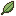
Безымянные видыNameless species
Растения и звери поначалу неизвестны. Вы наблюдаете, берёте образец и определяете его в лаборатории, а первый, кто внесёт вид в реестр Общества, остаётся в его истории.
Plants and animals start out unknown. You observe, take a specimen and identify it at a bench, and whoever enters a species in the Society's register first stays in its history.
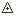
Карта из собственной съёмкиMaps from your own survey
Никакой миникарты. Лист рисуется за чертёжным столом из того, что вы прошли и измерили компасом, теодолитом, буссолью. Реки получают имена тех, кто их нанёс.
No minimap. A sheet is drawn at a drawing table from what you walked and measured with compass, theodolite and surveying compass. Rivers take the names of those who charted them.
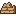
Земля, которая помнитGround that remembers
Почва помнит, что с ней делали. Леса растут, горят от молний в засуху и зарастают по порядку. Весной реки разливаются и оставляют на пойме ил.
Soil remembers what was done to it. Forests grow, burn in dry-season lightning and come back in order. Rivers flood in spring and leave silt on their plains.
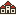
Города игроковPlayers' towns
Ратуша, грамоты, казна и сбор с граждан. Свой монетный двор чеканит серебро с гербом города, на площади идёт торговля, по дорогам ходят караваны.
A town hall, charters, a treasury and a levy on citizens. Your own mint strikes silver with the town's arms, the square trades, and caravans travel the roads.
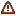
Война по правиламWar with rules
Ультиматум, окно войны и реликвия вместо разорения. Вассалы платят дань и поднимают восстания; архив врага можно вскрыть ради копий, но не сжечь.
An ultimatum, a war window and a relic instead of griefing. Vassals pay tribute and rise; an enemy archive can be raided for copies, never burned.
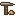
Наука вместо очковScience, not points
Гипотезы с интервалами, долгие ряды наблюдений, телескоп и альманах. Знание живёт в книгах и библиотеках, его можно скопировать и потерять.
Hypotheses with intervals, long observation series, a telescope and an almanac. Knowledge lives in books and libraries; it can be copied and it can be lost.
-
Раны и болезниWounds and illness
Переломы, заражение, дизентерия от грязной воды. Грязная рана видна на теле, а лекарь записывает в тетрадь, что дал и чем кончилось.
Fractures, infection, dysentery from foul water. A dirty wound shows on the body, and a healer writes down what was given and how it ended.
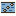
Моря и рекиSeas and rivers
Броды и пороги, пресная рыба в реках, давление и кессонная болезнь в глубине, водолазный шлем и батисфера на лебёдке.
Fords and rapids, freshwater fish in rivers, pressure and the bends in the deep, a diving helmet and a bathysphere on a winch.
Хозяйство и бытFarm, kitchen and workshop
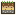
Сельское хозяйствоFarming
Урожай растёт от тепла, а не по таймеру: холодное лето оставит поле зелёным к заморозкам. Почва считается по закону минимума, поле помнит, что на нём росло, а болезни и вредители приходят к тем, кто сеет одно и то же год за годом.
Crops grow on warmth, not a timer: a cold summer leaves a field green when the frosts come. Soil follows the law of the minimum, a field remembers what grew on it, and disease and pests find those who sow the same thing year after year.
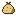
Скот и наследственностьLivestock and breeding
У каждого животного свой запас сил: худая корова даёт меньше молока и хуже телится. Признаки передаются потомству, пастбище выедается, а в хлеву и конюшне скот держится лучше.
Every animal runs on an energy budget: a thin cow gives less milk and calves badly. Traits pass to offspring, pasture gets grazed down, and a barn or stable keeps stock better.
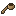
Кухня и запасыCooking and stores
Медный котёл на треноге над костром: что положите, то и сварите, и качество блюда зависит от продуктов. Соление в горшках, вяление на верёвке, а без свежей еды зимой подступает цинга.
A copper cauldron on a tripod over the firepit: what goes in decides what comes out, and ingredients set the dish's quality. Crocks for pickling, lines for drying, and scurvy for a winter without fresh food.
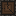
Лес и древесинаTimber
Дерево валят с запилом, и оно падает туда, куда его направили. Сырое бревно сохнет неделями; сырые дрова горят холоднее, а уголь из них выходит хуже.
A tree is felled with a notch and falls where you aimed it. A green log seasons for weeks; green firewood burns cooler and makes poorer charcoal.
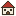
Здания, которые работаютBuildings that work
Нет готовых мультиблоков. Ядро здания измеряет комнату и признаёт библиотеку, трактир, теплицу или амбар, только если они устроены как надо, и тогда здание даёт свою пользу.
No fixed multiblocks. A building's core measures the room and recognises a library, an inn, a greenhouse or a barn only when it is built like one, and then the building does its job.
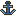
Механика и транспортMachines and travel
Create с дополнениями, поезда, парусники и самолёты, но всё на металлах TerraFirmaCraft: сначала нужно добыть и выплавить, потом строить.
Create and its addons, trains, sailing ships and aircraft, all built on TerraFirmaCraft's metals: first you mine and smelt, then you build.
Как это выглядитWhat it looks like
Кадры из собранной сборки, без правок.Frames from the assembled pack, untouched.
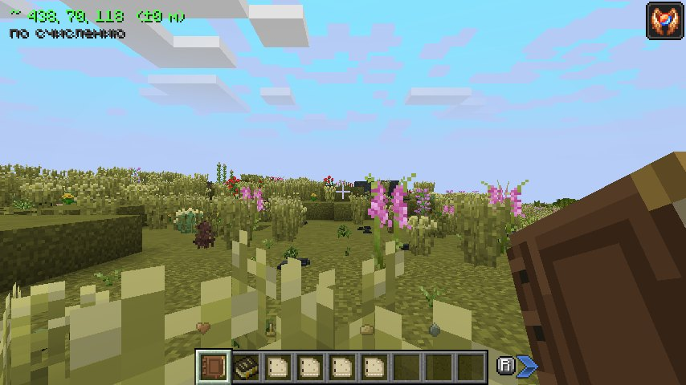
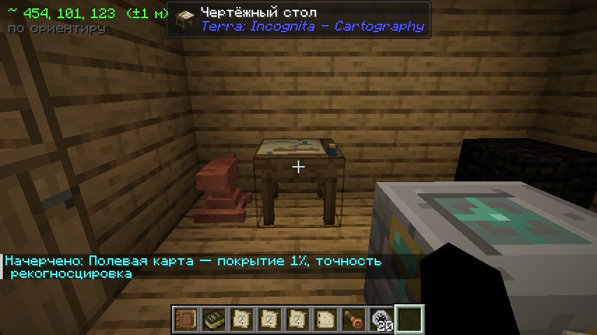
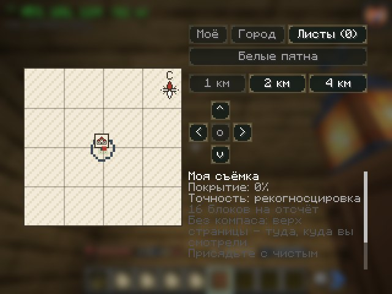
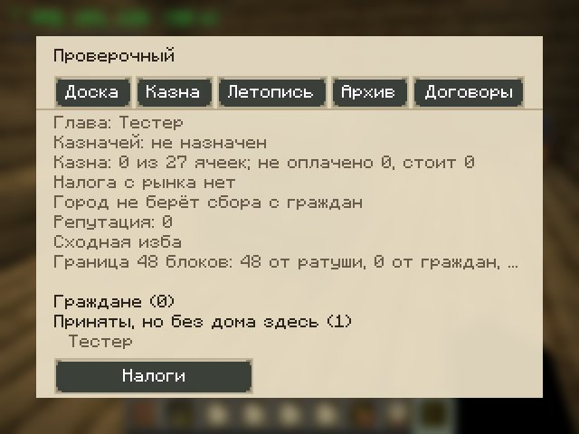
Как начатьHow to start
Лаунчер сам ставит Java, Minecraft, NeoForge и сборку и потом обновляет её.The launcher installs Java, Minecraft, NeoForge and the pack itself, and keeps them up to date.
Скачайте установщикDownload the installer
Файл TerraLauncher-…-setup.exe на странице релизов. Рядом лежит контрольная сумма.The TerraLauncher-…-setup.exe file on the releases page, with its checksum next to it.
Запустите егоRun it
Установщик пока не подписан сертификатом, поэтому Windows покажет «Система Windows защитила ваш компьютер». Нажмите «Подробнее», затем «Выполнить в любом случае».The installer is not signed yet, so Windows says “Windows protected your PC”. Click More info, then Run anyway.
Введите имя и нажмите «Играть»Type a name and press Play
Первый запуск скачает около полутора гигабайт. В игре вы получите «Полевые заметки» и четыре книги, которые объясняют первые дни.The first start downloads about 1.5 GB. In game you get the Field Notes and four primers that explain the first days.
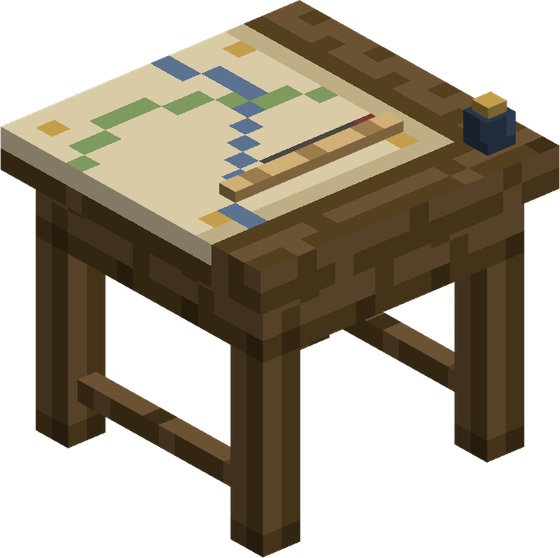